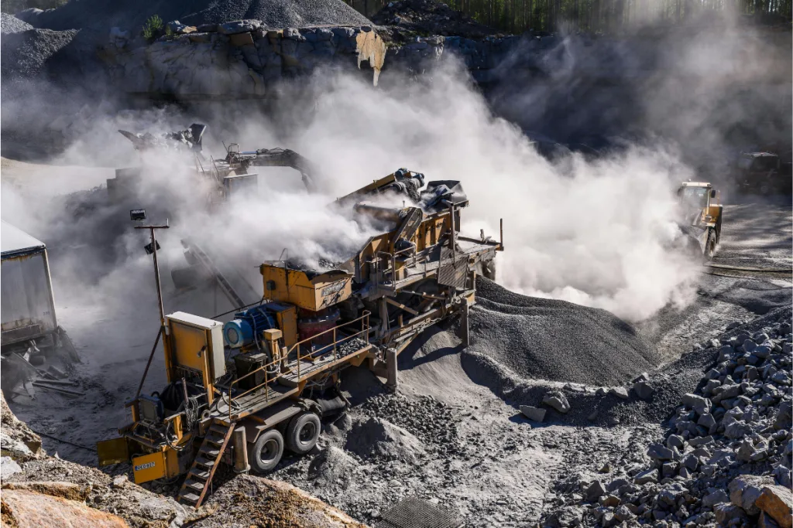

Poeira na Mineração: Riscos à Saúde e Normas de Controle
Fontes de geração, impactos sobre trabalhadores e meio ambiente, e o que dizem as normas brasileiras.

A poeira na mineração é composta por partículas sólidas suspensas no ar, geradas por processos mecânicos, transporte de materiais e movimentações no solo. Em sua maioria, essas partículas são tão pequenas que permanecem em suspensão por longos períodos, sendo facilmente inaladas pelos trabalhadores. Podem incluir sílica livre cristalina, ferro, manganês e outros minerais, dependendo do material extraído, e o perigo aumenta quanto menores são as partículas, especialmente as classificadas como PM10 e PM2,5, que penetram profundamente nas vias respiratórias. Para entender as diferenças entre os tipos de partícula mineral, veja também nosso artigo sobre poeira mineral: tipos e riscos.
Principais fontes de poeira em operações de mineração
- Perfuração de rochas
- Detonações e explosões de desmonte
- Carregamento e transporte de minério ou estéril
- Movimentação de caminhões em vias não pavimentadas
- Operações em pilhas de estocagem, britadores e peneiramentos
O clima seco, ventos fortes e longos períodos sem chuva contribuem para a dispersão da poeira em áreas vizinhas, ampliando os impactos ambientais. Em regiões com estação seca marcada, como boa parte do estado de Minas Gerais e do Centro-Oeste —, o controle de poeira em período de estiagem exige atenção redobrada, pois a ausência de umidade natural reduz drasticamente a precipitação espontânea do particulado.
Pilhas de estocagem de materiais finos, como minério de ferro de granulometria reduzida e concentrados minerais, são fontes de emissão especialmente difíceis de controlar em dias de vento. Estratégias específicas para esse tipo de fonte são abordadas em detalhes em nosso artigo sobre controle de poeira em pilhas de materiais com canhões de névoa.
Impactos na saúde dos trabalhadores
A exposição contínua à poeira pode causar doenças respiratórias ocupacionais, muitas vezes irreversíveis:
- Silicose: doença pulmonar progressiva e incurável causada pela inalação de poeira de sílica, que pode levar à insuficiência respiratória
- Bronquite crônica e enfisema pulmonar
- Asma ocupacional
- Doença pulmonar obstrutiva crônica (DPOC)
- Câncer de pulmão em casos de exposição prolongada e sem proteção adequada
Segundo a Organização Mundial da Saúde, trabalhadores expostos à poeira de sílica têm risco substancialmente maior de desenvolver silicose ao longo da carreira, o que reforça a importância de medidas de controle na fonte, e não apenas de proteção individual. O artigo sobre controle de poeira respirável e prevenção da silicose aprofunda esse tema com foco específico na doença.
Um dado relevante para a gestão de SSO em mineradoras é que a silicose pode se desenvolver mesmo após o fim da exposição, partículas de sílica já depositadas nos pulmões continuam causando fibrose progressiva mesmo que o trabalhador deixe de ser exposto. Isso torna a prevenção desde o início da carreira ocupacional especialmente importante, pois os danos acumulados nas primeiras décadas de trabalho podem definir o quadro clínico nas décadas seguintes.
Por que o controle na fonte é mais eficaz que a proteção individual
Equipamentos de proteção individual, como máscaras e respiradores, são indispensáveis, mas representam a última barreira de defesa, atuam apenas no momento em que o trabalhador já está exposto à poeira. Falhas de vedação, uso incorreto ou desconforto em jornadas longas reduzem significativamente sua eficácia real no dia a dia da operação.
Por isso, a hierarquia de controle de riscos ocupacionais prioriza medidas que eliminam ou reduzem a poeira antes que ela alcance o trabalhador. Isso inclui a supressão direta na fonte de geração, pontos de britagem, carregamento, transferência de correias e frentes de lavra, reduzindo a quantidade de partícula que efetivamente chega a ser respirada, independentemente do uso correto de EPI.
Do ponto de vista do custo-benefício, o investimento em controle na fonte tem impacto coletivo: beneficia simultaneamente todos os trabalhadores que circulam pela área, enquanto o EPI protege apenas o indivíduo que o usa corretamente. Em operações de mineração com dezenas ou centenas de trabalhadores expostos, a relação custo-efetividade do controle na fonte é significativamente superior.
Efeitos ambientais
A poeira mineral pode se depositar sobre folhas, bloqueando a fotossíntese e afetando o crescimento da vegetação. Em áreas mais sensíveis, esse impacto gera redução da biodiversidade local, contaminação de corpos hídricos por partículas em suspensão e piora na qualidade do ar em comunidades próximas. A visibilidade reduzida causada pela poeira em suspensão também aumenta o risco de acidentes operacionais e rodoviários nas áreas industriais.
Os efeitos ambientais da poeira gerada pela mineração são tratados como passivo ambiental nas avaliações de impacto exigidas para licenciamento. Mineradoras em processo de renovação de licença que não conseguem demonstrar redução das emissões de particulado frente à linha de base histórica podem enfrentar condicionantes mais restritivas, exigindo investimentos maiores para continuar operando nos mesmos parâmetros produtivos.
Normas e regulamentações ambientais
O controle da poeira na mineração é regulado por diversas normas e órgãos no Brasil:
- NR-9: Programa de Prevenção de Riscos Ambientais
- NR-15: Atividades e Operações Insalubres
- NR-22: Segurança e Saúde Ocupacional na Mineração
- Resoluções do CONAMA: Conselho Nacional do Meio Ambiente
- Agência Nacional de Mineração (ANM): exige monitoramento periódico da qualidade do ar
O não cumprimento dessas normas pode acarretar multas e sanções ambientais, interrupção das operações, responsabilização civil e criminal, e danos à imagem institucional da empresa.
Boas práticas de controle da poeira na mineração
- Instalar canhões de névoa em pátios, britadores e frentes de lavra
- Realizar monitoramento contínuo de partículas (PM10 e PM2,5)
- Treinar equipes para uso de EPIs e boas práticas operacionais
- Estabelecer rotinas de umectação com sistemas móveis, como o Conjunto Autônomo Móvel para Abatimento de Particulado (CAMAP)
- Usar polímeros de forma complementar nas vias não pavimentadas, quando viável
- Avaliar constantemente a eficiência dos métodos adotados
Empresas que adotam práticas eficazes e sustentáveis de controle de poeira não apenas protegem seus profissionais, como também garantem conformidade com normas ambientais, produtividade e imagem positiva diante da sociedade.
Dimensionando a solução para o porte da operação
Não existe um equipamento único ideal para toda mineradora, o dimensionamento depende da área a ser coberta, da distância entre os pontos de geração de poeira e do volume de material movimentado. Operações de menor porte costumam ser bem atendidas por equipamentos como o SP-55, enquanto frentes de lavra extensas, com necessidade de alcance maior, se beneficiam de modelos como o SP-65 ou de soluções de grande vazão. Conhecer o catálogo completo de canhões de névoa ajuda a identificar a configuração mais adequada a cada cenário operacional.
Para operações que precisam de cobertura em múltiplos pontos ao longo do dia, como frentes de lavra que se deslocam progressivamente, o Conjunto Autônomo Móvel CAMAP oferece a flexibilidade necessária para acompanhar as mudanças na localização das fontes de emissão sem necessidade de obras civis de suporte para cada novo ponto de instalação.
Conclusão
A poeira na mineração é uma questão crítica que afeta a saúde dos trabalhadores, o meio ambiente e as comunidades próximas. O controle inadequado pode gerar impactos irreversíveis, físicos, sociais e legais. Investir em soluções técnicas de supressão, como os canhões de névoa, é parte essencial de qualquer estratégia séria de segurança e sustentabilidade na mineração. Para uma abrangência completa do tema, recomendamos também a leitura do artigo sobre supressão de poeira na mineração, que consolida as principais estratégias para operações de mineração a céu aberto.
Perguntas Frequentes
Quais são as principais doenças causadas pela exposição à poeira na mineração?
As principais são silicose, bronquite crônica, enfisema pulmonar, asma ocupacional, DPOC e, em casos de exposição prolongada e sem proteção adequada, câncer de pulmão. A silicose é considerada a mais grave por ser progressiva e incurável.
Por que o controle de poeira na fonte é mais eficaz do que apenas usar EPI?
Porque o EPI atua apenas no momento em que o trabalhador já está exposto, e sua eficácia depende de uso correto e contínuo. O controle na fonte reduz a quantidade de poeira gerada antes que ela se disperse, diminuindo a exposição de forma mais consistente.
Quais normas regulam o controle de poeira na mineração no Brasil?
As principais são a NR-9 (Programa de Prevenção de Riscos Ambientais), a NR-15 (Atividades e Operações Insalubres), a NR-22 (Segurança e Saúde Ocupacional na Mineração) e resoluções do CONAMA, além da exigência de monitoramento periódico pela Agência Nacional de Mineração (ANM).
Quer proteger a saúde dos trabalhadores da sua operação?
Fale com nossos engenheiros sobre soluções de controle de poeira para mineração.
Solicitar Proposta